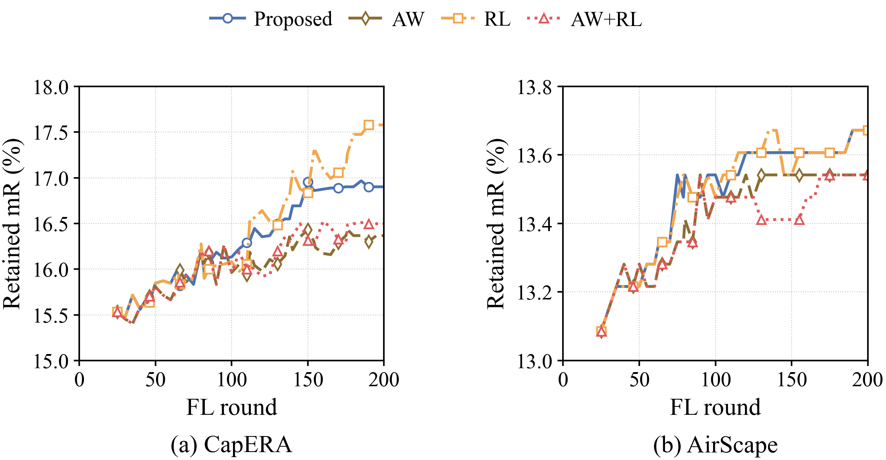
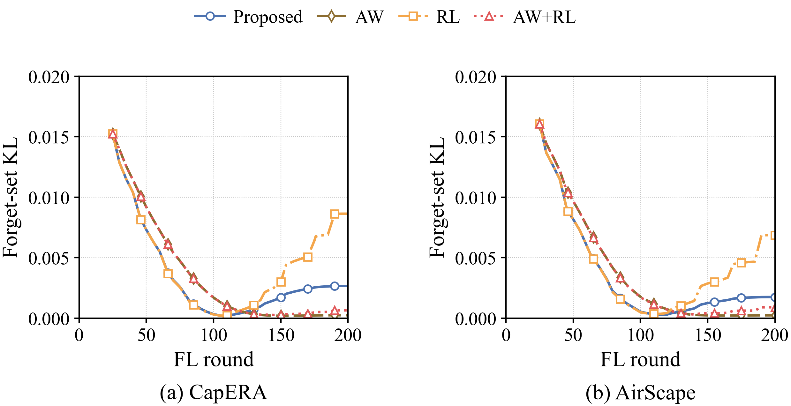
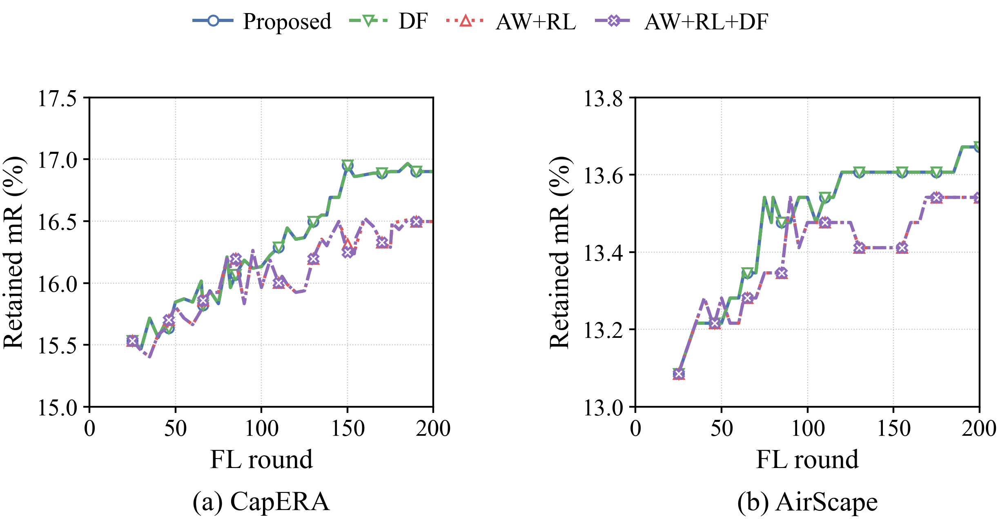
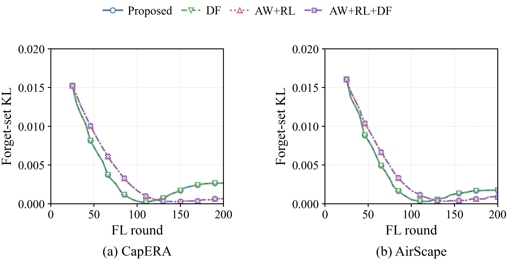
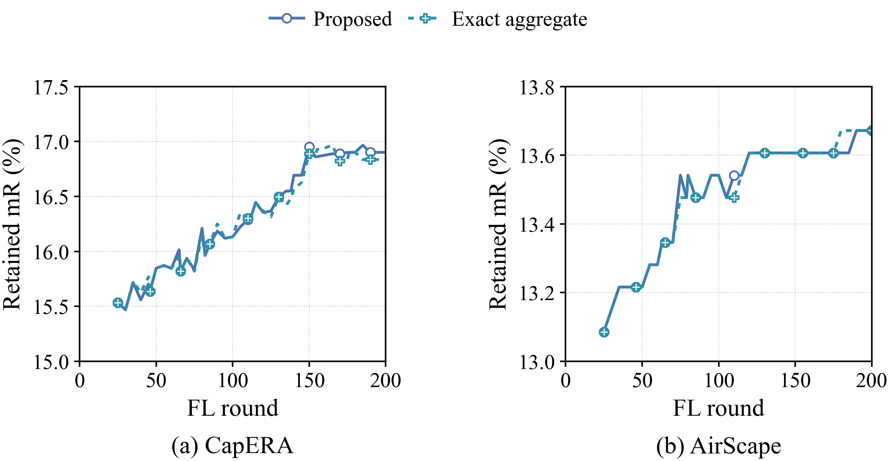
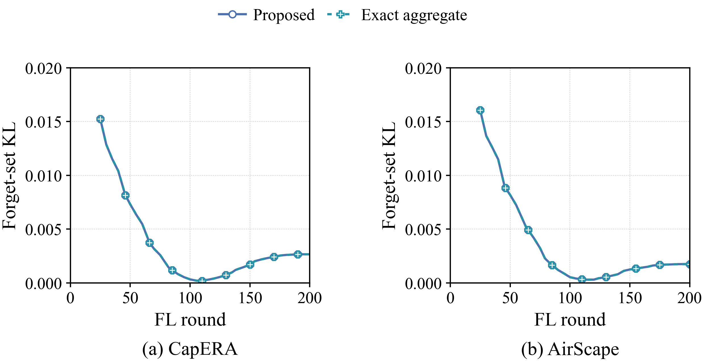

FU optimization pilot
CapERA · AirScape | 1 MHz · seed 0 · 200 FL rounds · 45 requests × 5 FU steps. Full CSV · Frozen protocol
후속 성분 분리 비교: 순수 망각에 대한 엄격한 무선 보호 · 기존 무선 제약을 유지한 방향 보정
이번 단일 seed 탐색에서 두 데이터셋의 mR 유지와 KL 감소를 함께 달성한 후보는 없었다. 가중치 조정은 KL과 mR 사이의 교환관계를 보였고, 수신 오차만 제거한 대조군의 KL은 거의 변하지 않았다.
AW: FU 내부에서 3FM과 RM+3CM의 gradient 크기를 맞추는 적응형 가중치. RL: 모든 요청의 FU 학습률을 기존 초기값 0.0035로 유지. DF: 요청 UAV에서 FU와 반대인 FL 성분만 제거한 뒤 합산. Exact aggregate: 실제 수신 벡터만 오차 없는 합으로 바꾼 진단 대조군.
DF의 식: L′ = L − min(0, L·U)/‖U‖² × U, 전송 벡터는 L′+U. L/U는 이미 학습률과 표본 가중치가 적용된 업데이트다. U=0이면 FL을 그대로 유지한다. 각 UAV의 FU 방향 보호이며, 다른 UAV 사이의 충돌이나 전체 KL 개선을 보장하지 않는다. FU 방향은 FM만이 아니라 해당 FU 목적함수 전체의 방향이다. PCGrad에서 착안한 단방향 투영으로, 투영 자체를 새로운 발명으로 주장하지 않는다.
CapERA
AirScape
각 후보의 설정은 실행 전에 고정했고 모든 결과를 남겼다. 기존 검증셋의 단일 seed 탐색 실험이며, 독립 테스트나 통계적 유의성 검증이 아니다. mR 변화와 KL 변화는 별개로 보고한다. retrain은 평가에만 사용했고 gradient/teacher/설정 선택에 사용하지 않았다. 원래 final_chart는 변경하지 않았다.
에너지는 FL/FU 처리의 통신+연산+호버이며, 이동·수집·공통 준비 비용은 제외한다. 추가 gradient 제어 연산은 기존 연산 모델에 보수적인 MAC-equivalent로 합산했다. 실제 하드웨어 측정값이 아니다. Exact aggregate는 원래 무선 설계 비용을 유지한 가상 진단이며 구현 가능한 무잡음 전송 방법이 아니다.
모든 곡선은 실제 저장된 FL+FU 이후 평가에서 가져왔다. KL은 같은 최종 retrain에 대한 양방향 검색 분포 차이다. 초반에는 FL 진행도와 아직 도착하지 않은 요청의 영향도 포함한다. 작은 KL 또는 MIA 차이는 삭제 보증이 아니다. 초기 관측값을 만들지 않아 곡선은 첫 기록인 round 25부터 시작한다.
01_weight_rate_mr_1x2

PDF · SVG
02_weight_rate_kl_1x2

PDF · SVG
03_fusion_mr_1x2

PDF · SVG
04_fusion_kl_1x2

PDF · SVG
05_receiver_mr_1x2

PDF · SVG
06_receiver_kl_1x2

PDF · SVG
방법 참고: CLIPErase (ACL 2025)의 FM/RM/CM 구분과 PCGrad (NeurIPS 2020)의 충돌 방향 투영을 참고했다. 여기서는 UAV 로컬 업데이트에 단방향 투영을 적용했으며, 두 논문의 원래 실험을 재현했다는 의미는 아니다.